The pictures come from a test with sample data, in Italian; the pages and the app switch language with their button.
How it works
Each cylinder has its own record: gas, who owns it, where it is, whether it is full, empty or defective, when its periodic test expires, and all its movements. The records update themselves with each of the driver's documents.
- The owner uses the page gastrace.chainintegrate.it on a computer: sees cylinders and documents, manages customers, phones and settings.
- The driver uses the GasTrace app on an Android phone: scans the cylinders' barcodes at delivery, collection and refill.
- After each document an e-mail goes to the customer and to the company.
- The data is encrypted: only the owner's data password opens it. The company pays nothing per operation: ChainIntegrate takes care of it.
Activating GasTrace
Done once, before anything else. You need:
- the company's ChainIntegrate account, already created;
- the account's administrator computer: the one where you created the account, with the ChainIntegrate Account extension in the browser.
- On the administrator computer open gastrace.chainintegrate.it and press Sign in with ChainIntegrate Account.
- The extension's window opens: check that the site is
gastrace.chainintegrate.itand confirm. - The page says "GasTrace is not active yet for this account".
- Press Request activation: your e-mail program opens with a ready-made e-mail to info@chainintegrate.it, holding your account's details. Add the company name where shown and send it.
- ChainIntegrate activates GasTrace and answers by e-mail: "GasTrace is active".
- Open gastrace.chainintegrate.it again on the same computer and go on with the first sign-in.
If no e-mail program opens when you press Request activation, press Copy the request, paste it in a new e-mail and send it to info@chainintegrate.it.
The request holds only your account's public details, which are not secret. Never send anyone, ChainIntegrate included, the account's recovery words, the data password or GasTrace's recovery code.
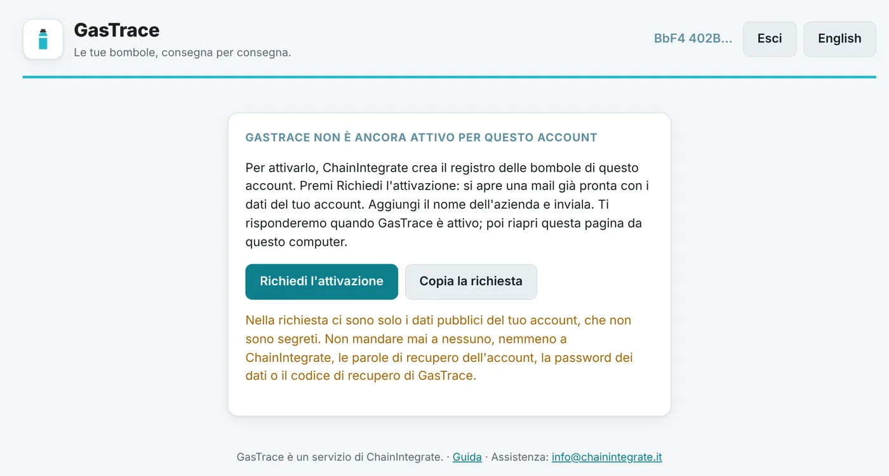
For the owner
First sign-in
After the e-mail "GasTrace is active", from the administrator computer:
- Open gastrace.chainintegrate.it and press Sign in with ChainIntegrate Account; confirm in the extension's window.
- The page finds the company's cylinder register by itself and shows Prepare the register's data:
- choose the data password (twice) and the language of the recovery code, then Continue;
- the page shows the 24-word recovery code: write it down by hand or print it at once;
- type the two words it asks for;
- tick the two confirmations: "I have kept the data password" and "I have written down or printed the 24 words and keep them away from the computer";
- press Save and open the data and confirm in the extension's window.
- Go on with the settings.
The following times open the page, sign in, type the data password and press Open. It takes a few seconds.
Each change (a customer, a phone, the settings, a correction) is confirmed in the extension's window, from the administrator computer. Pressing Cancel there changes nothing. From a computer authorized only for "access" you can see the data but not change it.
If the page cannot find the extension, install it from account.chainintegrate.it, or open the page in the browser where it is installed.

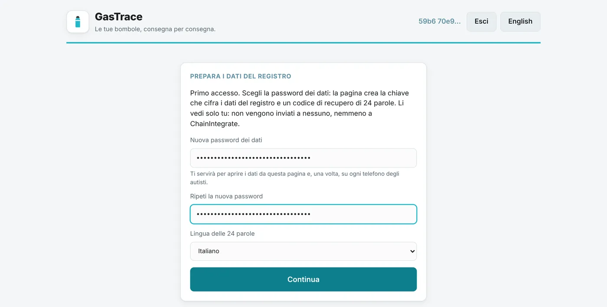

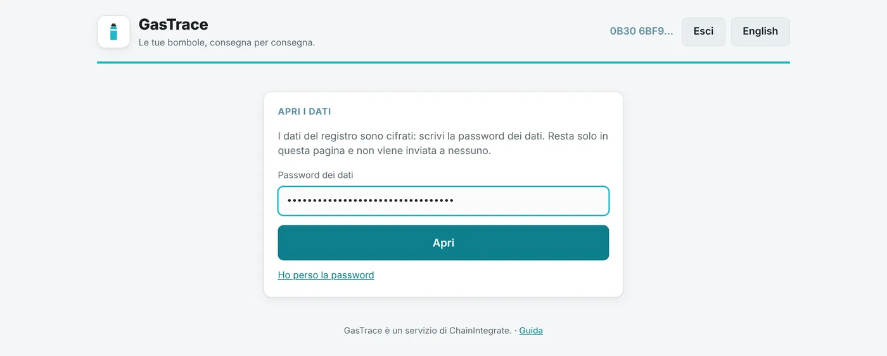
Data password and recovery code
- The data password opens the cylinders' data. It stays in the page, is never sent anywhere, and is forgotten when the page closes. After 30 minutes unused the page locks itself and asks for it again.
- The recovery code is 24 words, shown only once. Keep it printed in a safe place, away from the computer. Do not photograph it, e-mail it or give it to anyone: ChainIntegrate will never ask for it.
- Lost the password: on the password screen press I lost the password, type the 24 words and choose a new password.
- To change it: Settings → Change password. Phones already set up keep working.
Without the password and the recovery code nobody, ChainIntegrate included, can read the data any more.
A good password is a sentence of at least 20 characters, or at least 14 characters mixing lower case, upper case, digits and symbols.
Settings (do these first)
- Company name: shown in the app and in the e-mails' subject. Until it is set, the app warns the driver.
- Your company's e-mails: the company's mailboxes (office, warehouse…) that receive a copy of every document, for all customers, and the important notices about the register. Separate them with commas.
- Periodic test: every how many years it is due, for each gas (proposed: 10 years). Used to work out the expiry from the last test, or the last test from the expiry; for a single cylinder it can be changed with Correct.
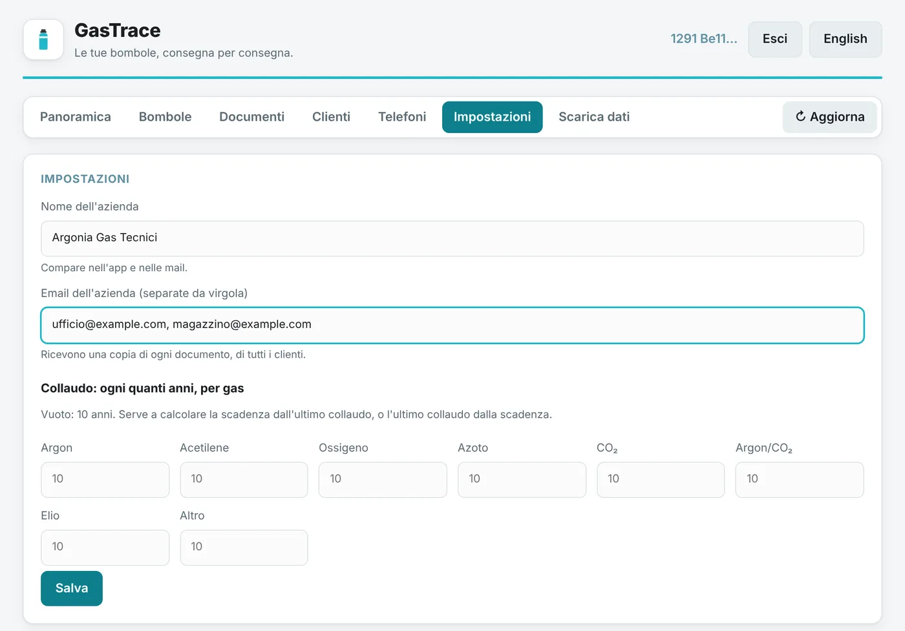
Customers and refill plants
- Customers → Add customer: name and e-mails. The customer's e-mails receive each document about them.
- Add refill plant: where the cylinders go to be refilled (and tested).
- Edit changes the name or e-mails; Remove archives it: the app no longer offers it, and its documents keep its name.
Customers and refill plants can have their own cylinders: when the driver records a new cylinder, they choose who owns it (see A new cylinder).
The driver sees the updated list the next time the app is opened.

Drivers' phones
Each phone is authorized once, with the driver next to you. The Phones section shows the setup QR code.
- The driver installs the app (see below) and opens it: scans the QR on the computer's screen.
- The app has the driver create the phone's key with fingerprint or PIN, then shows the phone's code (groups of 4 characters).
- You type that code in Authorize a phone, press Authorize and confirm in the extension.
- The app notices by itself and asks for the data password: you type it on the phone, once. The phone does not keep it.
Revoke a phone that is lost, stolen, or belongs to a driver who no longer works with you: from then on it cannot record anything. At its first unlock after the revocation, with network, the app erases by itself the key and the data kept on the phone. That is enough: changing the data key is only for rare cases.

Cylinders and documents
- Overview: how many cylinders at the depot, at customers, being refilled, defective; by gas; how many with the periodic test expired or about to expire; the latest documents.
- Cylinders: search by code, gas, customer or owner. Click a cylinder to see its whole history, movement by movement, corrections included.
- Documents: delivery notes, stock counts and refill notes, with their cylinders and the warnings the driver confirmed.
A large document leaves in several parts. If a part has not arrived yet, the document shows as Incomplete (2 of 3): usually the phone finishes sending by itself as soon as it has network. If it stays incomplete, ask the driver to open the app with network; the cylinders of the parts already arrived are recorded anyway.
Refresh reloads the data after a new document.

Periodic test
Each cylinder has the date of its last test and its expiry (month and year). Writing one is enough, the one stamped on the cylinder: GasTrace works out the other with the years chosen in the settings for that gas.
- The date is written when the driver records the cylinder, and updated when the cylinder comes back tested from the refill plant.
- In Cylinders you find the filters Test expired, Expiring within 3 months and Test to complete (cylinders recorded with an unreadable stamp).
- If the driver delivers a cylinder whose test has expired, the app warns; the driver confirms and the warning goes into the document and the e-mail.
Correcting a cylinder
Once recorded, only the owner can change a cylinder's data. Open the cylinder and press Correct:
- gas and litres;
- who owns it: the company, a customer or a refill plant;
- last test or expiry, and every how many years it is due.
Write the reason (for example "wrong gas when recorded"), press Save and confirm in the extension. The correction shows in the cylinder's history, with its date and reason: the earlier value does not disappear.
Downloading the data
In Download data you can save the register's data on the computer, as files to open with Excel or LibreOffice (double-click the file):
- Cylinders: each cylinder with its gas, litres, owner, where it is, condition, last test, expiry and last movement;
- Movements: one row for each cylinder of each document, oldest first, corrections included;
- Documents: one row per document, with how many cylinders were delivered, collected, counted or refilled;
- Customers and refill plants: names and e-mails.
The files are made in the page itself: the data goes through no server. The file name carries the date, so you can keep a copy each month.
The downloaded files are not encrypted: they hold the customers' names and e-mails. Keep them as the company's other documents.
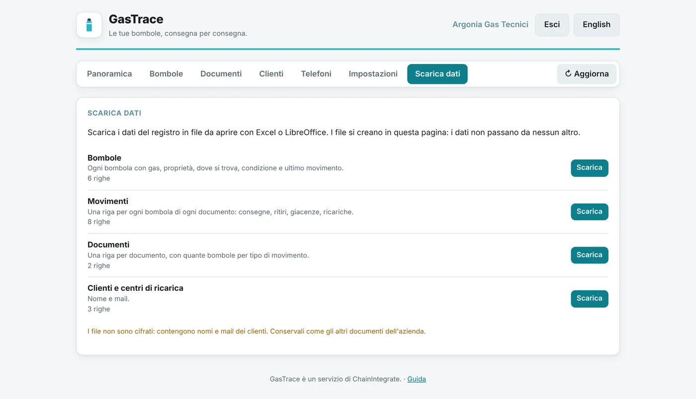
Handing the register to another account
Only needed if the company changes ChainIntegrate account. In Settings press Hand over the register, type the new account's address and confirm in the extension.
- For safety the handover completes only after 3 days: the new account accepts it from its administrator computer.
- The company's e-mails receive a notice at once. If you did not ask for it, press Cancel the handover and write to ChainIntegrate.
Rare cases: changing the data key
For a phone that is lost, stolen or belongs to a driver who leaves, revoking it is enough in Phones: it cannot record anything any more, and opening the app still takes that phone's fingerprint or PIN.
Change the data key only if you think someone could still read the data without permission: someone knows the data password, has seen the 24 words, or has a revoked phone together with its PIN (for example a former driver who kept the phone).
- In Settings press Change the data key.
- Choose a new data password: the page shows a new recovery code of 24 words. Write it down as the first time, tick the confirmations and confirm in the extension.
- On each phone still authorized, the app asks for the new data password: you type it, once.
From then on the new data can be read only with the new key; the old data stays readable with the new password. The old 24 words are no longer needed: destroy them.
For the driver
Installing the app
The GasTrace app is for Android phones. It is not on the Play Store: it is downloaded from GitHub.
- On the phone open the latest version of GasTrace and tap the
gastrace-v….apkfile to download it. - Open the downloaded file. The first time Android says it cannot install apps from this source: tap Settings, turn on Allow from this source, go back and the installation goes on.
- Play Protect may offer to scan the app because it does not come from the Play Store: accept the scan, or tap More details → Install anyway. It is Google's check of apps that do not go through its store. Install only the file downloaded from this guide's link; for any other warning, or a file that came from elsewhere (e-mail, chat), stop and ask ChainIntegrate.
The phone needs a screen lock (fingerprint, PIN or pattern): without it the app cannot protect its key.
Never uninstall the app or clear its data: the phone's key would be lost and the phone would have to be set up again with the owner.
Setting up the phone (once, with the owner)
- Open GasTrace and tap Scan the code: scan the QR the owner shows on the page.
- Tap Create the key and confirm with fingerprint or PIN.
- The app shows this phone's code: give it to the owner (you can use Copy).
- Once the owner has authorized it, the app asks for the data password: the owner types it.
From then on open the app with Unlock with fingerprint or PIN. After 10 minutes unused, or in the background, the app locks itself: it opens again with fingerprint or PIN, and a document left half-made comes back. What the phone keeps (customers, documents to send) is encrypted: without fingerprint or PIN it cannot be read.
If the owner changes the data key, the app asks for the password again when opened: the owner types it.

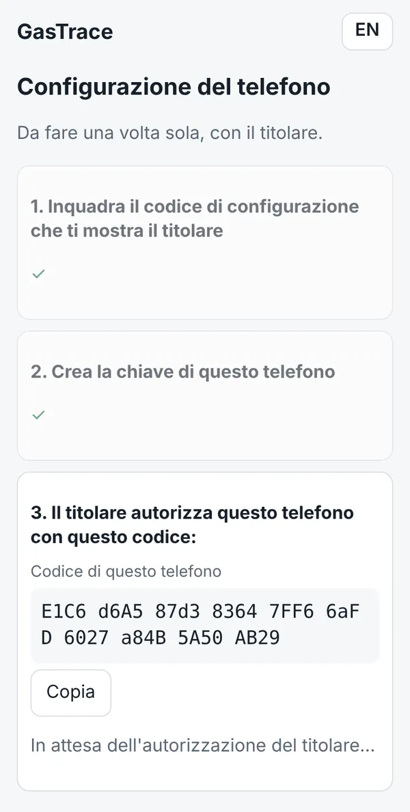
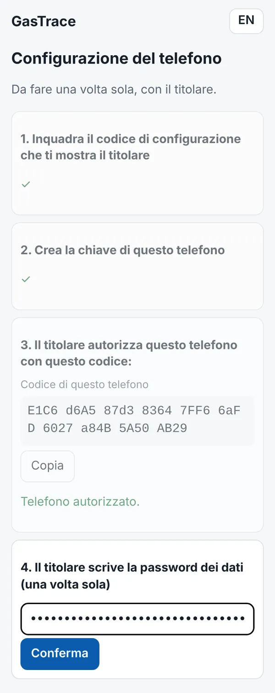
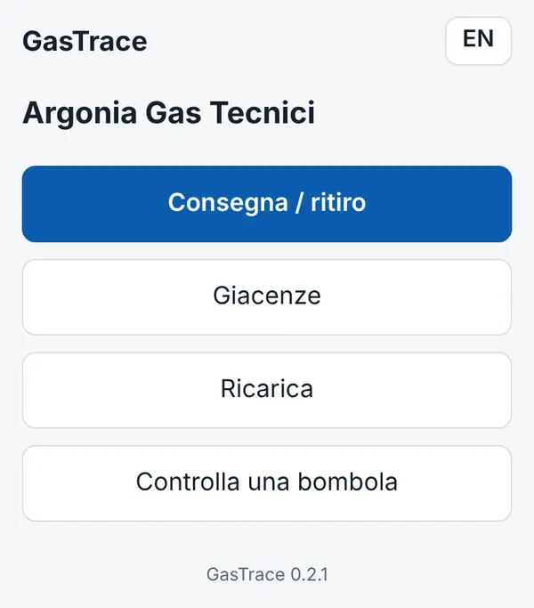
A new cylinder
When you scan a cylinder never recorded before (in a delivery, a stock count or a refill), the app asks:
- Gas, and the litres if you like;
- Who owns it: Ours (proposed), The customer's (the document's customer) or A refill plant's (choose which);
- Periodic test: choose Last test or Expiry, depending on what is stamped on the cylinder, and type month and year; the app works out the other date. If the stamp cannot be read tap Unreadable: the owner finds it under "Test to complete".
These details are written only once. If you made a mistake, tell the owner: they correct it from their page.
Delivery and collection
- Tap Delivery / collection and choose the customer.
- Tap Scan cylinder for each cylinder, those you leave and those you take back. If the code cannot be read, use Type the code.
- The app proposes the movement by itself:
- a cylinder at the depot, or never seen before, is a delivery (full);
- a cylinder that was already at this customer is a collection (empty; full or defective can be chosen).
- For a new cylinder answer the questions of A new cylinder.
- If a warning appears (for example "Recorded at another customer", "Owned by another customer", "Test expired"), check it and tap I confirm the warnings: they are listed in the e-mail too.
- Type the delivery note number, check the summary and who gets the e-mail (you can add an address), then Send and confirm with fingerprint or PIN.
"Recorded" means the document is saved; then the app says whether the e-mail left.
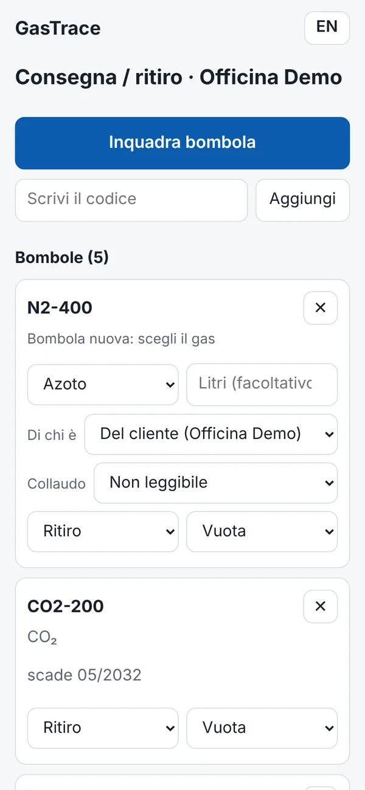

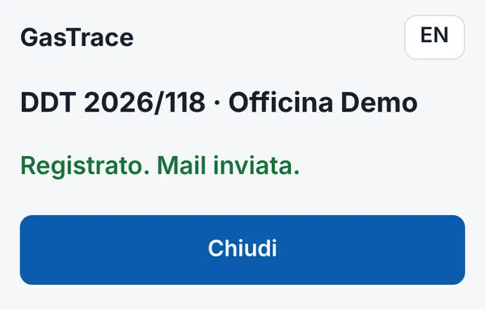
Stock count
Used at the start, to record the cylinders already at customers or refill plants, and whenever a count is needed.
- Tap Stock count and choose the customer or plant.
- Scan all the cylinders there; for new ones answer the questions of A new cylinder.
- Send. No document number is needed and no e-mail leaves, unless you add an address.
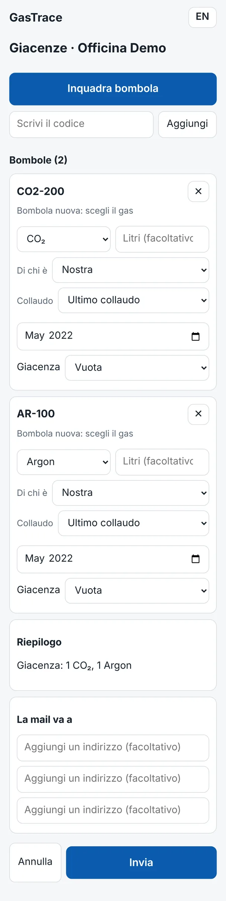
Refill and periodic test
Tap Refill and choose the refill plant. Scan the cylinders: those at the depot are sent to refill, those that were at that plant are back from refill.
For a cylinder that comes back tested, tap Tested on its line: the app proposes the current month as the last test. If the stamp says otherwise, correct it, or choose Expiry and type the stamped one.
Type the document number and send.
Checking a cylinder
Check a cylinder: scan the code and see the gas, who owns it, where it is, its condition, the test expiry and the last movement. It records nothing.
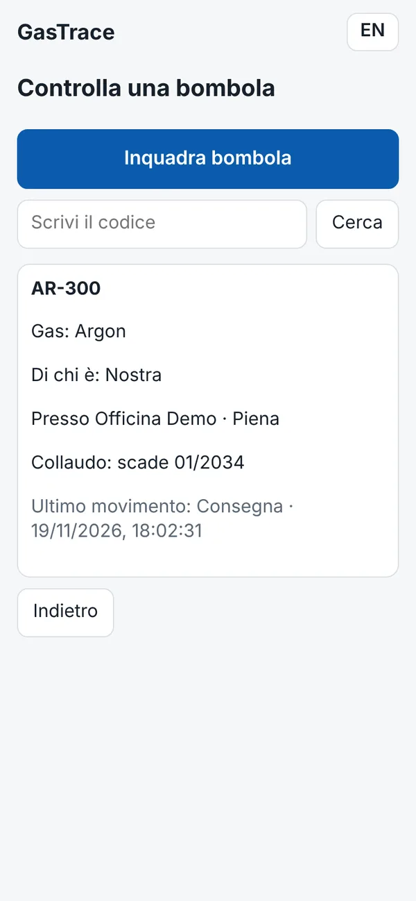
No network: "To send"
Without signal, or when the service is busy, the document is saved on the phone and leaves by itself as soon as it can. The home screen shows To send (n): there you can see them, send them with Send now or cancel them. A cancelled document can no longer be recorded. Recorded documents whose e-mail did not leave stay there too, with Send from the phone; once you sent it, tap E-mail handled: remove.
A waiting document can be refused when it leaves: if meanwhile someone else recorded one of the same cylinders ("A cylinder changed in the meantime"), if more than seven days went by ("Document expired"), or if the phone was revoked. When no part was recorded, Make the document again appears: the app reopens it with the same customer, number and cylinders, read again with their current state. Check the lines and send.
A large document leaves in several parts; if it stops, the app sends the missing parts by itself as soon as it has network. A document too large (roughly more than 80 cylinders) does not leave: the app says so before signing. Split it into two documents.
The document's e-mail
After each delivery note or refill note an e-mail goes to the customer's e-mails, the company's e-mails and any address added in the document, with the cylinders and the confirmed warnings. If the app says the e-mail did not leave, or it does not know whether it left, tap Send from the phone: your e-mail app opens with the text ready.
Updating the app
When a new version is out, the home screen shows "A new version of GasTrace is available". Tap Download, open the downloaded file and confirm: the new version installs over the old one and the phone stays set up. The installed version is written at the bottom of the home screen.
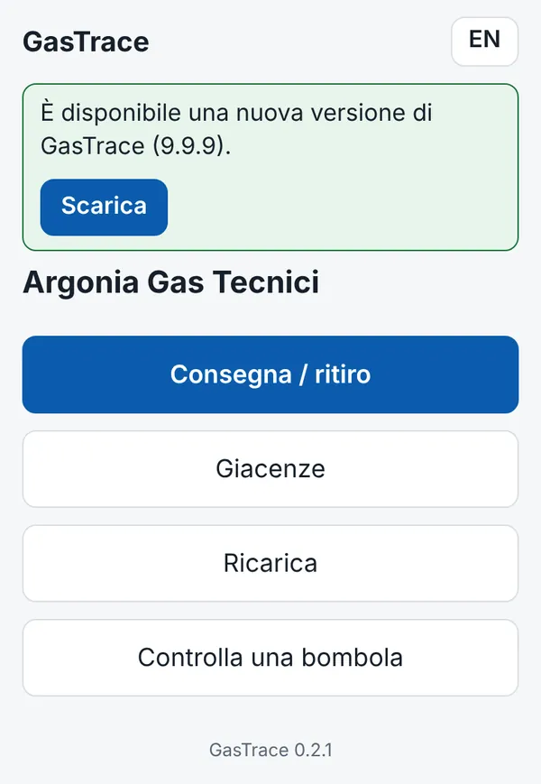
Common problems
"GasTrace is not active yet for this account"
The register has not been created yet: follow Activating GasTrace. If you already sent the request, wait for the e-mail "GasTrace is active". If you already received it, check that you opened the page from the computer and with the company account you sent the request from.
"A cylinder changed in the meantime"
Someone recorded the same cylinder after you scanned it. Make the document again: the app proposes the updated movements.
"This document is already recorded"
The same document number was already sent. Look in "To send", or ask the owner to look in Documents.
"Owned by another customer"
The cylinder is recorded as owned by a customer other than the one of the delivery. Check that you took the right cylinder; if you deliver it anyway, confirm the warning. If the owner is wrong, the owner of the register corrects it.
"Test expired"
The periodic test's expiry has passed. Decide with the owner whether to deliver it; if you do, confirm the warning: it shows in the document and in the e-mail.
"This phone is no longer authorized"
The owner revoked it: the app erased the phone's key and data. If that was a mistake, set it up again with the owner.
Phone lost, stolen or replaced
The owner revokes it at once in Phones. The new phone is set up from scratch, like the first time.
The fingerprint no longer works, or the screen lock was removed
Android deletes the app's key when the screen lock is removed. Set the screen lock again and set up the phone again with the owner; the owner revokes the old code.
The page cannot find the extension
Open the page in the browser where ChainIntegrate Account is installed, or install it from account.chainintegrate.it.
The app asks for fingerprint or PIN again
After 10 minutes unused, or in the background, the app locks to protect the data: unlock it with fingerprint or PIN. A document left half-made comes back.
"This operation is confirmed from an administrator computer of your account"
Changes to the register (customers, phones, settings, password, corrections) are confirmed only from an administrator computer of the company's account. From a computer authorized only for "access" you can see the data but not change it: use the administrator computer.
"Another computer changed this"
While you were editing a customer or the settings, someone changed it from another computer. The page shows the updated value: check it and make your change again if needed.
"Wrong password"
Check upper case and the keyboard. If it is lost, use I lost the password with the recovery code.
Anything else
Write to ChainIntegrate (info@chainintegrate.it) saying what you were doing and the message you saw.